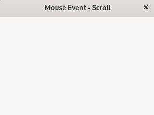

(update:2025/2/1)
マウスのスクロールボタンを前後に回転させたときの動作を指定します。
#include <gtkmm.h>
#include <iostream>
class MyWindow : public Gtk::Window
{
public:
MyWindow();
~MyWindow()=default;
protected:
bool on_mouse_scroll( double dx, double dy );
};
MyWindow::MyWindow() {
set_title( "Mouse Event - Scroll" );
set_default_size( 320, 240 );
auto m_controller = Gtk::EventControllerScroll::create();
m_controller->signal_scroll().connect(sigc::mem_fun(*this, &MyWindow::on_mouse_scroll), true );
m_controller->set_flags( Gtk::EventControllerScroll::Flags::VERTICAL );
add_controller(m_controller);
}
bool MyWindow::on_mouse_scroll( double dx, double dy ) {
std::cout << "dx:" << dx << " dy:" << dy << std::endl;
return true;
}
int main(int argc, char* argv[])
{
auto app = Gtk::Application::create( "gtkmm4.example" );
return app->make_window_and_run<MyWindow>( argc, argv );
}
| Mouse event | |
|---|---|
| Console | Window |
|
dx:0 dy:1 // 後退（後ろ回り） dx:0 dy:-1 // 前進（前回り） |
 |